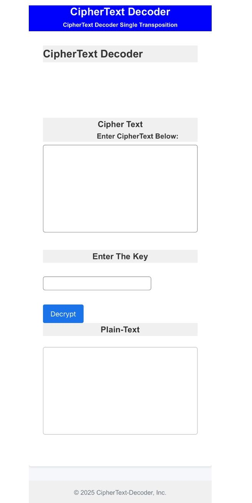
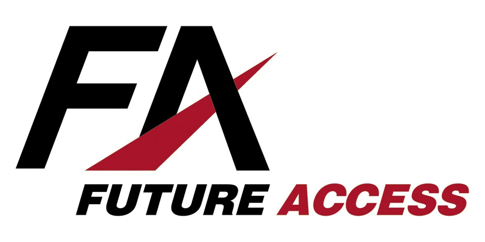
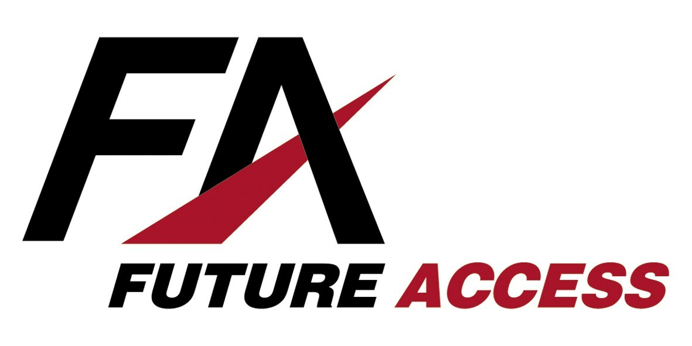

A responsive webpage developed using HTML, CSS, and JavaScript, with a backend powered by PHP and MySQL. The source code is available in the GitHub repository, and the live site is available here.

A web tool that helps decode ciphertext when provided the encryption key.
🛠️ With this tool, you can:
Decode Single Transposition Ciphers by entering your ciphertext and key.
I am Aavash Pudasaini, a Bachelor of Information Technology graduate with a major in Software Application Development from the University of Southern Queensland, a public university ranked among the top 150 universities in Australia. The Bachelor of Information Technology program is professionally accredited by the Australian Computer Society (ACS) and, through the Seoul Accord, is internationally recognised.
I am a motivated, diligent, and proactive individual with a strong positive attitude that underpins my approach to academic pursuits, professional work, and everyday life. I possess excellent interpersonal and communication skills, enabling me to build strong rapport with individuals from diverse cultural and professional backgrounds. I am equally comfortable working independently or collaboratively and thrive in highly technical, team-based environments.

 
